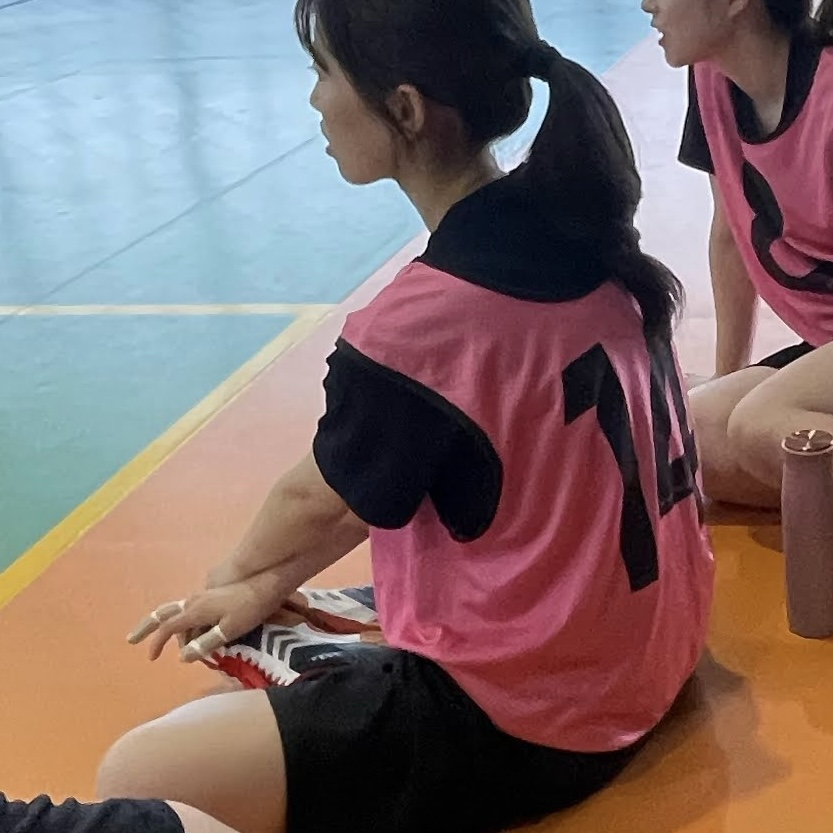
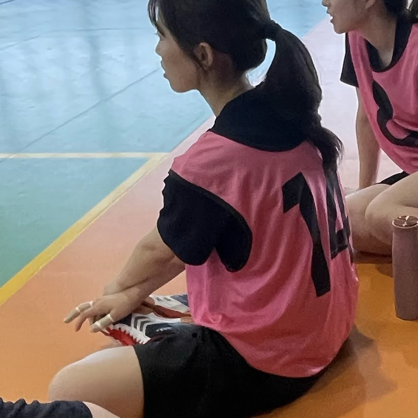

柴田 ユリコ
YURIKO SHIBATA
このサイトを開いていただき、誠にありがとうございます！
私は、"三重県"の海の近くで、生まれ育ちました。
Worksのページの背景は実家の写真で、海が一望できます
趣味は、映画鑑賞、ハンドボール、紙粘土でミニチュア作りです
私の性格として"変なところで真面目"
この言葉は、私のアイデンティティの核と言えます
弱みでもあり、最大の強みでもあるところがミソです
私は、小さな頃からものづくりが好きで
今では情報学を学びながら、様々な"ものづくり"に取り組んできました
将来も、新しく、わくわくできるモノを追求していきたいです！


 
